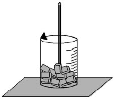
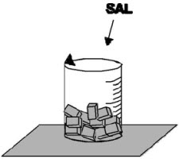

| Objetivo: |
Mostrar al alumno lo que ocurre con la temperatura de un cuerpo en cambio de estado. Observación: el agua pura tiene su temperatura de fusión a 1 atm, en 0°C. Cuando agregamos la sal esa temperatura disminuye, así se puede mantener el hielo por más
tiempo..
|
|
| Introducción: |
|
En física y química se denomina cambio de estado a la evolución de la materia entre varios estados de agregación sin que ocurra
un cambio en su composición. Los tres estados básicos son el sólido, el líquido y el gaseoso.
La siguiente tabla indica cómo se denominan los cambios de estado:
También se puede ver claramente con el siguiente gráfico:
Los dos parámetros de los que depende que una sustancia o mezcla se encuentre en un estado o en otro son temperatura y presión.
La temperatura es una medida de la energía cinética de las moléculas y átomos de un cuerpo. Un aumento de temperatura o una
reducción de la presión favorecen la fusión, la evaporación y la sublimación, mientras que un descenso de temperatura o un
aumento de presión favorecen los cambios opuestos.
4.500 ºC — No hay sólidos.
6.000 °C — No hay líquidos (solo gases).
10.000 °C — Sólo plasma
|
|
|
| Desarrollo Experimental: |
|
Experimento 1:
Con un picahielo quiebre los cubos de hielo envueltos en paño. Eche el hielo picado a un vaso de precipitado, lea la
temperatura y anote (Figura 1).
Retire el termómetro y agregue la sal de cocina, mezcle e introduzca el termómetro (Figura2).
Observe por algunos minutos la columna de mercurio en el termómetro y anote la temperatura final de equilibrio.
Introduzca un tubo de ensayo en la mezcla. Coloque el bulbo del termómetro dentro del tubo de ensayo a ½ centímetro del
fondo (Figura 3). Con la jeringa, agregue agua al tubo de ensayo suficiente para cubrir el bulbo del termómetro. Anote la hora y la
temperatura inicial del proceso.
Mueva suavemente el agua, con el propio termómetro, en el interior del tubo de ensayo, anote de 30 en 30 segundos, la
temperatura del agua. Compruebe si hay cambio de estado.
Realiza los procedimientos de Inicio, y conexión de la interfase con la computadora descritos en “Guía de Experimentación
con Interfase, Sensores y Computadora (Software Excel)”, Inicia el Programa Excel para la adquisición de datos con el sensor
temperatura. Determina el intervalo de tiempo para las mediciones por medio del temporizador.
Realice el experimento en esta ocasión con el sensor de temperatura tomando determinaciones en tiempo real y en forma mucho
más precisan por medio de la cuál podrá visualizar en una gráfica en tiempo real el calor específico de las mezclas o cuerpos que
cambien de estado físico.
|
| Resultados y Conclusiones: |
|
1. Observando el ítem 5, ¿Qué cambio de estado ocurrió?.
2. Realice el análisis sobre la gráfica generada con la interfase y la computadora.
3. ¿Cuál el significado físico del plató en el gráfico?.
4. En caso de que este experimento fuese realizado en otro lugar, con presión atmosférica diferente, ¿los valores encontrados
serían los mismos?.
En el cambio de estado no ocurre variación de temperatura, el calor cedido o retirado del cuerpo es llamado de calor latente, al
plotarse, un gráfico de temperatura por calor cambiado de un cuerpo, que está a priori en, estado sólido, el plató (curva) presentará
en un momento una recta paralela al eje del calor. Allí ocurre el cambio de estado.
|
|
|
| Figura 1: |
|  |
| |
| Figura 2: |
|  |
| |
| Figura 3: |
|
|